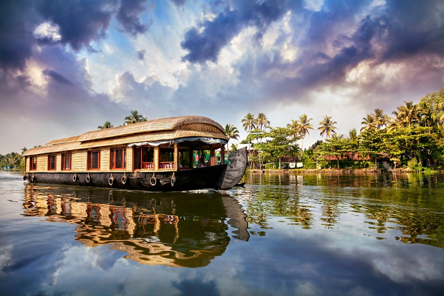

Kochi,formerly known in English as Cochin is a major port city on the Malabar Coast of India bordering the Laccadive Sea, which is a part of the Arabian Sea. It is part of the district of Ernakulam in the state of Kerala and is often referred to as Ernakulam. Kochi is the most densely populated city in Kerala. As of 2011, it has a corporation limit population of 677,381 within an area of 94.88 km2 and a total urban population of more than of 2.1 million within an area of 440 km2, making it the largest and the most populous metropolitan area in Kerala.

